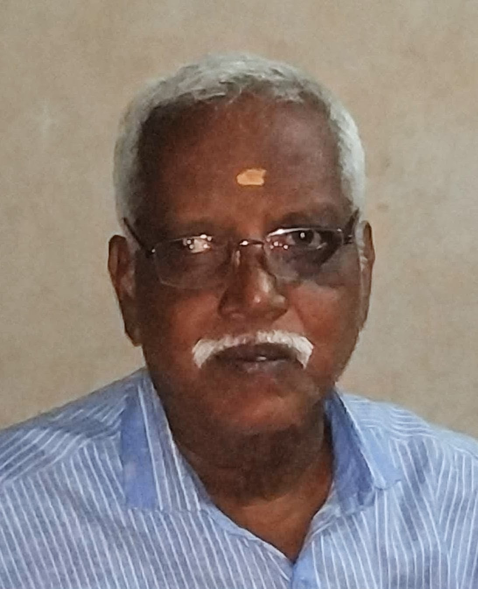

About Us
Empowering students across Tamil Nadu with skills that open government doors

Who We Are
Ganesh Commercial Institute is a premier, government-approved vocational training centre located in Royapuram, Chennai. Established in 1978, we have spent over four decades with a singular mission: to equip students, freshers, and TNPSC/state government job aspirants with the certified skills required to secure stable, rewarding careers.
Our institute specialises in DOTE-approved typewriting, English & Tamil and Computer Office Automation (COA) programmes. Every course we offer is designed to meet the exact requirements of Tamil Nadu government recruitment examinations, giving our students a direct pathway to secure and stable careers.
Our Mission
To provide affordable, high-quality vocational training that directly prepares students for government and corporate employment opportunities across Tamil Nadu and beyond.
Our Vision
To be the most trusted typewriting and computer training institute in Tamil Nadu — recognised for our consistent results, student-first approach, and commitment to excellence in every batch we train.
Why Choose Us
What makes Ganesh Commercial Institute different from the rest
Govt Recognised
Our certificates are fully valid and accepted by DOTE-approved and Tamil Nadu state departments.
Experienced Faculty
Our instructors bring years of practical teaching and government exam expertise to every class.
Proven Pass Rates
Consistent 98%+ pass rates across all batches — our results speak louder than words.
Affordable Fees
Quality education should not be a financial burden — our courses are priced for every student.
Flexible Batches
Morning, afternoon, and evening batches available to fit your schedule.
Exam Guidance
Full support from registration to results — we guide students through every step of the exam process.
Our Achievements
A track record built over years of dedication
Institute Founded
Ganesh Commercial Institute was established in Royapuram, Chennai, starting its journey with a foundational batch of typewriting students.
DOTE Recognised
Received formal approval and affiliation from the Directorate of Technical Education (DOTE), Tamil Nadu, standardising its technical examination training.
Infrastructure Modernisation
Upgraded the training campus with dedicated computer terminals alongside mechanical typewriters to support modern office demands.
COA Programme Launch
Expanded the curriculum by launching the certified Computer on Office Automation (COA) course to qualify students for essential state government administrative jobs.
Flexible Learning Adaption
Adapted to pandemic disruptions with flexible batch schedules and custom support, ensuring students maintained top performance in Typewriting and COA exams.
45+ Years of Educational Service
Celebrated 45+ years as North Chennai’s premier training hub, sustaining a 4.9-star rating with thousands of career placements across government and private sectors.
Meet the Founder

K. VASU
Founder & DirectorWith nearly five decades of experience in vocational education and technical training, Mr. Ganesh Kumar founded this institute in 1978 with a clear purpose — to make quality typewriting and computer education accessible to every student in Chennai, regardless of their background.
His hands-on teaching approach and deep understanding of DOTE exam patterns drive the institute's high success rate year after year. By expanding from mechanical typing to certified COA programs, he empowers Royapuram aspirants to secure rewarding government and private sector careers.